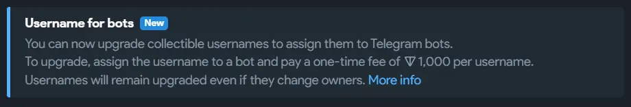
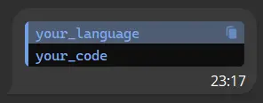
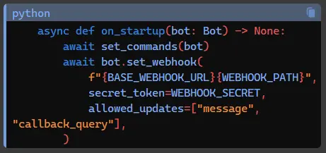

Common Questions
Which aiogram version should I use?
Aiogram 2.x is essentially outdated at this point. While it can still be used, it lacks support for the latest TelegramBotApi versions. Understanding Aiogram 2.x may be necessary to maintain older projects, but aside from that, there's little reason to begin learning it now. It's advisable to start with the most recent version.
Where should I start from?
Try the Simple Usage example from the documentation.
Can my bot use premium emojis?
Yes, but it requires buying a custom Fragment username for 1000 TON ($7.2k at the time of the acticle's last update).

Can two of my bots communicate?
Short answer is no.
However, you can establish their communication through third-party software, as they cannot directly see each other's messages on Telegram.
Another simple (but maybe not the most elegant way) is to create a junk-channel (it can be private) and handle channel posts. Both bots have to be admins in the channel.
Bot A example:
@router.message(Command("send"))
async def send_handler(message: Message, bot: Bot):
await bot.send_message(CHANNEL_ID, "A message via [Bot A]")
Bot B example:
@router.channel_post()
async def post_handler(channel_post: Message):
print(f"[Bot B] got the messsage: {channel_post.text}")
Output:
Text formatting
There are different ways to format your text. You can either use plain markdown/html syntax in your messages, or use aiogram's in-built methods. I recommend the second option, because it is more reliable, as it unparses your strings before applying styles.
You need to import the desired module using:
or
All of the methods available you can check here.
Can I use HTML or Markdown directly? Yes, you can.
Why do we have two Markdowns there and what should I use then? Because there is a legacy Markdown version without some of the available features. In most cases you will need to use MarkdownV2.
HTML or Markdown? Sometimes Markdown acts weird with Telegram Bot API, so I would suggest choosing HTML if you don't have an urgent need to use Markdown.
Formatting OpenAI Output for Bots
If you are trying to convert OpenAI generated text you can check out chatgpt-md-converter by an active community member Latand.
Installation:
Usage example from the Latand's tg channel:
from chatgpt_md_converter import telegram_format
formatted_text = telegram_format("Here is some **bold**, __underline__, and `inline code`.\n```python\nprint('Hello, world!')\n")
print(formatted_text)
How can I send code blocks via bot?
If you use HTML parse mode:
In case of working with Markdown:
Output:

How can I send code blocks manually?
Example input:
```python
async def on_startup(bot: Bot) -> None:
await set_commands(bot)
await bot.set_webhook(
f"{BASE_WEBHOOK_URL}{WEBHOOK_PATH}",
secret_token=WEBHOOK_SECRET,
allowed_updates=["message", "callback_query"],
)
```
Example output:

Can my bot handle offline messages?
As the Telegram Bot API documentation states:
There are two mutually exclusive ways of receiving updates for your bot - the getUpdates method on one hand and webhooks on the other. Incoming updates are stored on the server until the bot receives them either way, but they will not be kept longer than 24 hours.
In case of working with polling you can call the getUpdates() (for example, use can add await bot.get_updates() in the startup function) method to retrieve all the missed messages.
If you have a webhook - configure it while setting up:
Can my bot set FSM states for a group?
Yes, there are 5 types of FSM strategies. Dispatcher has a fsm_strategy parameter, which by default is set to FSMStrategy.USER_IN_CHAT. You can change it when creating your Dispatcher instance.
What if I want to have both private states and group states? You can use Storages to store any kind of custom states you want.
How can I handle media groups/albums?
Aiogram doesn't have in-built methods for it, but you can use aiogram_album utility by an active aiogram community member.
How to filter "not State"?
There is an in-built aiogram state filter that you can use for that.
example by Stas
Can I use Telegram Stars?
Yes, aiogram fully supports Stars payments and you can check out an example from github.